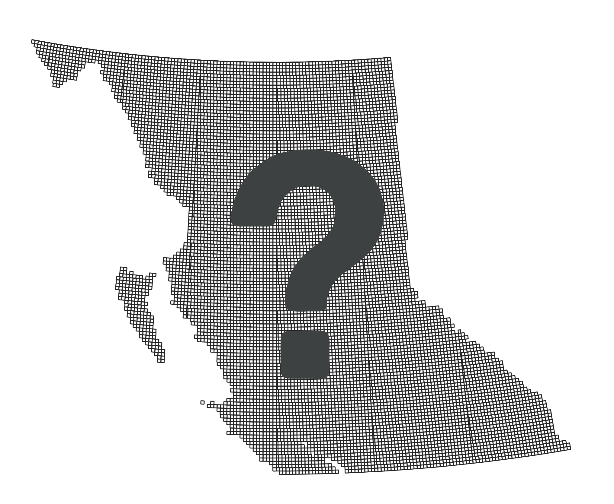

British Columbia’s Dominion Land Surveys
Evan Thornberry | GIS Librarian | UBC Library
This is a lightning talk about British Columbia's Dominion Land
Surveys. I have a hunch that most of you are somewhat familair with
the U.S. Public Land Survey System. In Canada, there was a similar
system used starting in the 1840s called the dominion land survey
(DLS), which covers most of Manitoba, Saskachewan, and Alberta, and
also small portions of BC.
The Dominion Land Survey System
Modelled after US Public Lands Survey System
Uses series of 7 meridians at regular intervals
Surveyor's diaries
Depict historical features, placenames, and places of importance
to Indigenous histories
As I've said, the DLS is not unlike the US Public Land Survey
System, but tere are some differences, with the main one being that
the Canadian system is divided up on one continuous grid which uses
a series of 7 meridians at regular intervals of 4 degrees longitude,
and only one baseline at the 49th parrelllel. The surveys, like in
the US, also accompany surveyors diaries, which are very rich
resources for descriptions of the historical flaura and fauna of the
area, but also describe encounters with Indigenous peoples already
living on the lands that were being surveyed. And, they depict
historical geographic features, placenames, and places of importance
to indigenous histories.
Generalized topographic profiles of Canada's Western and Prairie
Provinces
As many of you are aware, British Columbia's natural landscape is
more pointy than the other western canadian provinces, and you can
see here in this figure. So BC's rugged and remore landscape got in
the way of an early survey of the lands of BC. And as a result only
a small fraction of the Privince was ever surveyed under this
system.
90-second history of BC's DLS
British Columbia railway belt, 1911, (CU288764) by Canada.
Department of the InteriorYoung, R. E. (Robert Evans), 1861-1911..
Courtesy of Historical Maps Collection, Libraries and Cultural
Resources Digital Collections, University of Calgary
The surveyng of biritish columia under the rules and guidelines of
the dominion land survey system stems from BC's negotioan to become
part of the dominion of canada in the early 1870s. In May of 1871,
the original terms of the union specified The Dominion of Canada
would build a railroad within 2 years of the union between the
colony and the Dominion, to better connect the Pacific with the rest
of Canada. In return, the Dominion would be granted the a 20-mile
buffer of land surrounding the railway referred to as the railway
belt (and shown here on this map). The dominion could use this land
as they wish to further the development of the railway, as long as
it remained public and not claimed by land grants. The union between
BC and Canada happened in July of 1871, and construction of the
railway was supposed start within two years, but that didn't happen
for a variety of reasons, mainly because the dominion couldn't get a
good guarentee from any protential contrators to build the railway.
And while construction was being delayed, people were moving into
these areas anyway and expecting to recieve land grants. The CPR was
formed on 1881 and given the land of the railway belt. But because a
lot of the land had already been settled, the Province agreed to
compensate the dominion by giving them control of a separate block
of land in northeast BC referred to as the Peace River Block.
Although it took some time to begin, Surveys of the Railway belt and
the Peace River Block ended in the 1930s, with many sections
unsurveyed or incomplete.
Survey's use the same township and range grid layouts as the US's
PLSS, each containing 36 sections. Printed surveys are most commonly
full townships, 1/4 townships, and sections. This is an example of a
1/4 township survey, held at Library and Archives Canada, and
showing a grid section somewhere in BC.
Main BC DLS Collections
Library and Archives Canada (Ottawa)
BC Archives (Victoria)
BC Land, Title, and Survey Authority (Victoria)
Koerner Library, UBC (microfiche copies of LAC's)
You can find these surveys at various libraries and archives in
Canada. The mains one being Library and Archives Canada in Ottawa,
which hold surveys for all of Canada. BC Archives in Victoria BC,
which have the correspondance copies of the ones at LAC plus
surveyors diaries.
From
Understanding Western Canada's Dominion Land Survey System
(1986), by Robert B. McKercher and Bertram Wolfe
We've been doing a little work to try and understand who has what by
creating some geograhic indexes. This wasn't very easy to do,
because we couldn't find a dominion land survey grid in GIS Format
that covered BC. And because the grid is defined by both geographic
and linear units it wasn't easy to create the grid from scratch in
GIS. I don't know if any of you have tried working with both
lat/long coordinates (for meridians and baselines) and distances
from them (in feet and miles) in GIS, but kind of scrambles it's
brains. Lukcily someone really smart created a dataset for Alberta,
so we just copied that one between the 4th and 6th meridian, moved
it over to BC, and changed each grid's attributes to reflect the
meridians.
10,734 total DLS grid sections covering BC
So now we have a general DLS grid of BC, which we used to join an
old shipping list for the microfiche we ordered in 1989.
LAC: 1,489 total surveys covering BC
BC Archives: 1,369 total surveys covering BC

BC LTSA: 9,000+ total surveys covering BC
More reading
github.com/ubc-lib-geo/bc-dls
Thanks!
open.library.ubc.ca